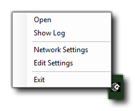

Wenn Sie Ihr Spiel kompilieren, verwenden Sie normalerweise den lokalen Arbeiter, den Computer, auf dem GameMaker Studio 2 installiert ist. Unter Umständen müssen Sie jedoch einen anderen Computer verwenden, um Ihre Projekte zu erstellen. Wenn Sie beispielsweise an einem Mac arbeiten und ein Windows Projekt erstellen möchten, möchten Sie einen Remote Worker konfigurieren und einen Build- Windows PC einrichten. Wenn Sie einen Remote-Worker verwenden, sendet GameMaker Studio 2 im Wesentlichen alle erforderlichen Dateien von dem (lokalen) Computer, auf dem der Computer ausgeführt wird, an den Remote-Worker-Computer und erstellt dann die endgültige ausführbare Datei für das Projekt (entweder Speichern) auf dem Remote-Computer oder danach auf den lokalen Computer zurückbringen). Bevor Sie diese Funktion verwenden können, müssen Sie jedoch bestimmte Tools auf der Build-Maschine installiert und einige Einstellungen vorgenommen haben, die wir hier erläutern werden.
Um einen Remote Worker einzurichten, müssen Sie zuerst die Remote Worker Build Tool-Anwendung auf dem PC installieren, der verwendet werden soll. Sie finden dieses Tool, indem Sie auf dem lokalen Computer in GameMaker Studio 2 das Build-Menü GameMaker Studio 2 und die Option "Remote Worker Installer anzeigen" auswählen:
Alternativ können Sie im Target Manager auf das Augensymbol klicken und das Remote Worker-Installationsprogramm auf diese Weise aufrufen:
Der Installer wird so genannt " GameMakerStudio-Remote-Installer-X.X.X.XXX.exe "und Sie müssen es auf den PC kopieren, den Sie als Remote Worker verwenden möchten ( GameMaker Studio 2 muss nicht auf dem Remote Worker installiert sein, nur dieses Programm). Sobald Sie es auf den Build PC kopiert haben Wenn Sie das Installationsprogramm beendet haben, werden Sie möglicherweise vom Betriebssystem aufgefordert, über die Firewall auf Ihr Netzwerk zuzugreifen. Sobald Sie den Zugriff gewährt haben, öffnet das Installationsprogramm eine Seite in Ihrem Webbrowser und Sie Notieren Sie sich die auf dieser Seite angezeigte IP-Adresse und Port-Nummer, da Sie diese für den nächsten Schritt benötigen.
Nun müssen Sie zu dem Computer zurückkehren, auf dem GameMaker Studio 2 installiert ist, und auf die Schaltfläche Target Manager klicken
um das Target Manager-Fenster zu öffnen, wechseln Sie in den Worker- Bereich und klicken Sie auf die Schaltfläche Add Worker
. Das folgende Fenster wird geöffnet:
Hier müssen Sie Ihrem Remote - Worker einen Namen geben (das ist, was in der Worker Liste im Ziel Manager angezeigt wird) und in dann in den Hostnamen Abschnitt, fügen Sie die Adresse Sie wurden gezeigt und stellte fest, die zuvor aus dem Arbeitscomputer, einschließlich die Portnummer.
Wenn alles korrekt gelaufen ist, sollten Sie jetzt eine Meldung erhalten, dass Sie erfolgreich eine Verbindung zum Remote-Worker-Computer herstellen können. Nachdem Sie Ihren Remote Worker installiert und mit Ihrem IDE-Hauptcomputer verbunden haben, müssen Sie die lokalen Build-Einstellungen für jede Plattform einrichten (weitere Informationen finden Sie im Abschnitt unten), bevor Sie Ihr Projekt kompilieren können.
Die Einstellungsseite zeigt die verschiedenen Pfade und Build-Einstellungen für die Remote Worker-Anwendung. Oben in den Einstellungen befinden sich die verschiedenen Pfade, die von der Remote Worker-Anwendung verwendet werden. Bevor Sie irgendetwas anderes tun, sollten Sie diese überarbeiten und ggf. auf alternative Pfade setzen (im Allgemeinen sollten die Standardpfade jedoch in Ordnung sein). Sie können auf die Remote Worker-Einstellungsseite mit einer der folgenden Methoden zugreifen:
- Klicken Sie auf den Link "Einstellungen" oben auf der Remote Worker-Seite, die im Browser Ihres Remote-Computers geöffnet wird:
- Verwenden Sie die RMB im Remote Worker-Symbol, um die Einstellungen im Browser Ihres Remote-Computers zu öffnen:
- Öffnen Sie auf Ihrem lokalen Computer den Target Manager und klicken Sie auf das Symbol "Zahnrad" Öffnen Sie oben die Arbeitereinstellungen in einem Fenster auf Ihrem lokalen Computer:
Daraufhin wird die Einstellungsseite angezeigt, auf der Sie die verschiedenen Optionen sehen und einstellen können, mit denen Sie die Pfade für das Erstellen Ihres Projekts festlegen können:
Nachdem Sie die Pfade für die Remote Worker-Anwendung überprüft haben, können Sie (falls erforderlich) die verschiedenen Local Build-Einstellungen festlegen. Auf verschiedenen Plattformen müssen verschiedene Build-Tools auf dem Build-PC installiert sein. Der Remote-Worker muss sie dazu verwenden können, um Ihre Spiele über die Seite "Einstellungen" zu erstellen. Die ersten Einstellungen hier sind die allgemeinen Einstellungen:
Hier können Sie den Port für den Help Server und den Port für den Debugger einrichten. Diese können geändert werden, wenn bei der Verwendung des Debug-Moduls Verbindungsprobleme auftreten. Im Allgemeinen sollten jedoch die Standardwerte beibehalten werden.
Sie können jetzt die verschiedenen Optionen für die Plattformen einrichten, für die Remote Worker folgende Funktionen erstellen kann:
- Windows

Wenn Sie Zugriff auf die Windows Zielplattform haben, sollten Sie mit dem Remote-Worker auf dem Windows PC sofort mithilfe der VM- Option erstellen können. Wenn Sie jedoch den YYC verwenden möchten, müssen Sie auf dem Build-PC den Pfad zu Visual Studio festlegen. Ausführliche Informationen zum Einrichten eines Windows PC zum Kompilieren Ihrer Projekte finden Sie im folgenden Helpdesk-Artikel:
Nachdem Sie Ihren Remote Worker eingerichtet und die lokalen Build-Einstellungen abgeschlossen haben (siehe Abschnitt oben), können Sie damit beginnen, Ihre Spiele zu kompilieren. Dazu müssen Sie lediglich den Remote Worker aus der Target Manager-Liste auswählen, die zu testende / zu kompilierende Plattform sowie andere Optionen (wie Kompilierungstyp oder -konfiguration) auswählen und dann auf Play drücken
oder Ausführbare Datei erstellen .
HINWEIS: Die verfügbaren Plattformen im Target Manager ändern sich je nach den Funktionen des Remote Worker-Computers. Es sind nicht alle Ziele verfügbar. Beachten Sie auch, dass es für Remote Workers kein "Test" -Ziel gibt.
Wenn Sie das Projekt einfach abspielen, wird der Remote Worker-Computer es kompilieren und ausführen. Wenn Sie jedoch eine ausführbare Datei erstellen, kompiliert Remote Worker das Projekt und gibt dann ein zurück *.zip Datei auf dem lokalen Rechner zum Speichern.Es sei darauf hingewiesen, dass weder die Debug-Schaltfläche noch die Clean-Taste
ist verfügbar, wenn ein Remote Worker verwendet wird. Beachten Sie auch, dass Sie zurzeit jeweils nur einen Remote-Build ausführen können.


Sobald Sie den Remote Worker auf Ihrem Remote-Computer installiert haben und ausführen, wird er in der Taskleiste als Symbol angezeigt. Sie können mit der rechten Maustaste darauf klicken, um die folgenden Optionen aufzurufen: 
- Öffnen: Öffnen Sie die Remote Worker-Anwendung in Ihrem Standardbrowser.
- Protokoll anzeigen: Öffnen Sie die Protokolldatei für den Remote Worker in Ihrem Browser.
- Netzwerkeinstellungen: Hier können Sie filtern, welche Maschinen Sie Builds an die Remote Worker-Maschine senden möchten. Jeder Filter kann ein CIDR- Filter oder der Hostname eines Computers sein, der zugelassen wird. Sie sollten wissen, dass Sie, wenn Sie möchten, dass mehrere Maschinen eine Verbindung zu einem Remote-Worker herstellen oder Verbindungstypen (z. B. Kabel und WLAN) mischen, den IP-zulässigen Bereich hier bearbeiten müssen.
- Einstellungen bearbeiten: Öffnen Sie das Remote Worker-Einstellungsmenü (oben im Abschnitt Einstellungen beschrieben ).
- Beenden: Beenden Sie die Remote Worker App. Dies bedeutet, dass Sie sich von einem lokalen Computer aus nicht mehr mit der App verbinden (oder kompilieren) können, bis Sie die Remote Worker-App neu starten.